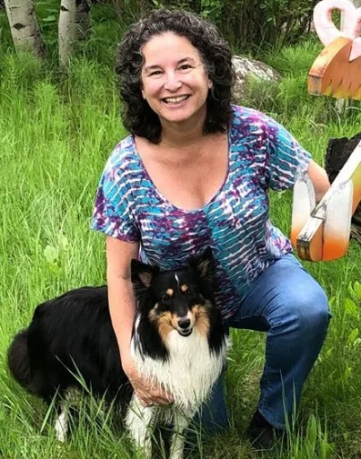

Beth’s Mosaics
Meet the
Artist
I am a mosaic and ceramic artist currently living with my husband Mark, dog Skye, and cat Jasper in Woodland Park, Colorado. I have enjoyed hand-building with clay for decades and learned how to create mosaic art with colorful Mexican Talavera ceramic tiles while living in Bucerias, Mexico. My pieces use a combination of Mexican ceramic tiles, found re-purposed tiles, and self-made clay tiles. As a devotee of recycling and re-purposing, I scour thrift stores and estate sales for the frames and bases.
I also teach mosaics and am an active member of the non-profit, Mountain Artists. www.themountainartists.org.
Contact Me